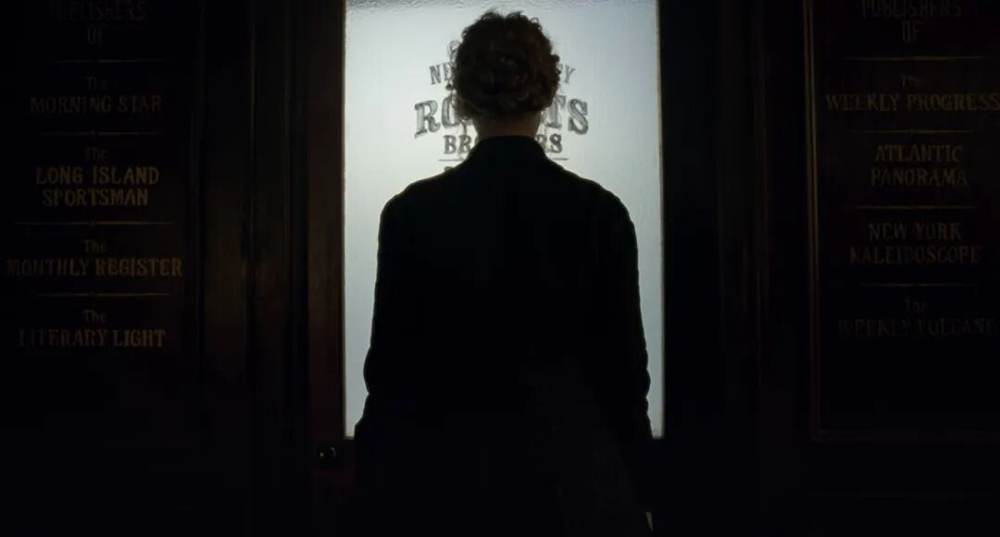
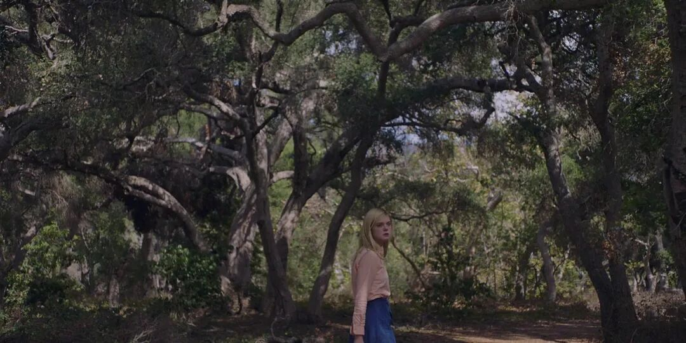
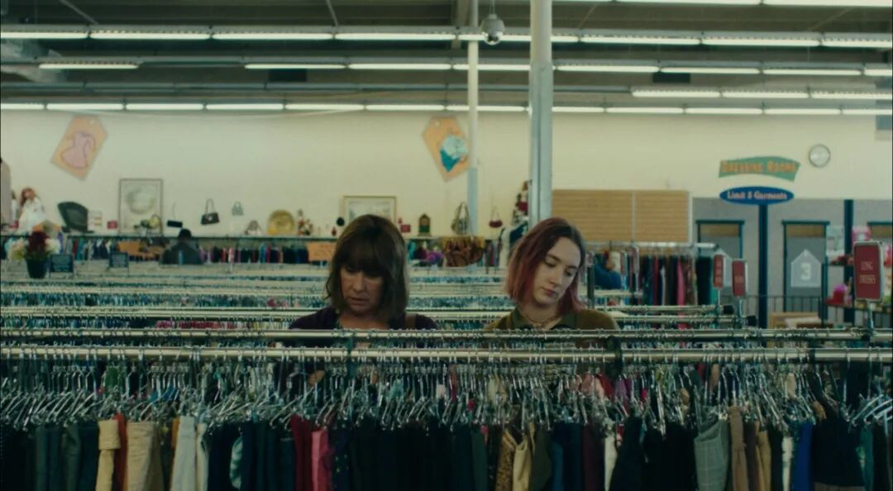
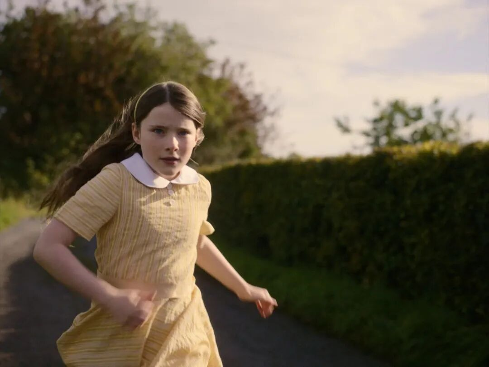

《Little Women》
33 岁啦，生日前照例要做点矫情的小总结。
2026 年 2 月 7 日，刚搬回杭州的一个阴湿冬日，我在家里整理了手机里的 248 篇备忘录。其中有几篇写于 2015 到 2017 年，刚好至今10年了。读到它们时，像在观察一个既熟悉又遥远的女人。
那时的她已经有一段稳定的关系，也有一份普通的工作，生活看起来没有什么明显的问题。可她总觉得哪里不对劲，很少感到兴致勃勃，生活过得有些掩耳盗铃。
为什么呢？
现在回想，大概是生命力先于理智感到了不安。她被困在一层不透明的薄膜里，看不清前面能去哪里，总觉得有些呼吸不畅。
到这一年的末尾再回看，我才发现，后来发生的许多事，似乎都在回应那时的自己：离开、学习、换城市、重新建立生活，也包括回到母校，设立一个奖学金。

《20th Century Women》
关于生活理念
那种20岁刚开头的不安，是一种直觉，带着我离开了原本可以一直做下去的工作，带着我转行、去新的城市，认识新的人，也带着我一本本地读、一篇篇地写。
这些年，我并没有抵达一种毫无困惑的人生。只是比起从前，困惑的时刻少了一些，领会的时刻多了一些。我渐渐知道自己看重什么，也开始有能力把有限的时间、金钱和精力放到真正想要的地方。大概也算渐渐成熟了一点。
对我来说，成熟的感觉就是：困惑的时刻，少于领会的时刻。
我为自己整理过一套人生系统。它并不复杂：希望身体少一点疼痛，精神多一点舒展；希望拥有自由独立、体验世界的生活；希望把创造当作长期的职业方向。至于更底层的原则，仍然是那几个字：真实、爱、能量。
它们听起来很抽象，我也是花了四五年才让它们越来越具体：
真实，是不再勉强自己停留在明知不适合的关系、环境和叙事里；爱，是珍惜亲密关系，也尽量不把爱变成控制；能量，则是把自己慢慢养成一个能够行动、能够创造、也能够向外给予的人。
我当然不会觉得当下的生活就是完美的生活，但这已经是我带着“真实、爱、能量”这几种价值观所创造的、迄今为止最好的生活了。
这种“好”，当然也并不意味着与过去的生活的隔绝。
去年年底，我和家里人提起，想在老家的初中设立一个给女生的奖学金。父亲问：“你有钱为什么不捐祠堂？”我说：“那祠堂供奉我吗？牌位上有过女孩子的名字吗？”
我觉得现在的生活，有百分之九十的时候是舒坦而快活的。那剩下百分之十，是无法防范的、难以避免的毛刺碰到皮肤的时候，比如这样的“捐祠堂”时刻。
和前几年每次被刺到都还会反复思考相比，现在的我不再维持温和的姿态，而是以利刃相还。因为，优柔的生活是假的。
最初的成长环境，就像一个漫长的冬季。长大后流动到大城市，过独居的生活，像是进入了热带雨林。后来，当我短暂回到原来的环境，刚打开门的几分钟，会感到凉爽，甚至打个颤。
但我已经成了一个热带动物，无法完全回到冬季的生活。一旦待得太久，会冻僵，会被寒风刺痛脸颊，也会因为无法洗个温暖的热水澡而感到浑身发痒。所以，偶尔拥有短暂的凉爽，就已经足够。
现在想来，这段对话并不需要延伸出什么结论。我们对于一笔钱应该去往哪里，本来就有不同的想象。他相信的是延续一套既有秩序，我更愿意把资源放到一些新的可能性上。
我不再期待靠说服改变谁。人和人之间有时确实走在不同的路上。重要的是，我已经能够比较清楚地判断：哪些地方值得投入，哪些关系需要边界，哪些价值观要靠自己去实践。

《Lady Bird》
关于波伏瓦奖学金
设立奖学金的念头，其实也正来自我对成长环境的重新理解。
我在小镇读初中时，也有很多对外面世界的想象。那时并不知道未来有哪些职业、哪些城市、哪些生活方式可以选择；身边能谈论的事情很有限，关于女性如何生活的样本也不算多。
后来离开小镇，读书、工作、迁徙，见过更多人，也逐渐明白：一个女孩能够走多远，当然取决于她自己的努力，但她是否见过更多可能，是否在某个时刻得到过确认，也同样重要。
所以，我想为小镇的女生做一点小事。
这个奖学金叫“波伏瓦奖学金”。它计划至少持续三年，每学期奖励九位成绩优异的女生，覆盖三个年级。第一批获奖的女孩今年已经收到了证书和一本《简爱》。这不是一个多么复杂的项目，却也让我第一次更具体地感受到：想法要落到现实里，需要钱、时间、沟通、流程，需要和学校确认方案、准备材料、处理一些细小而实际的事情。
过去，我实践信念的方式，主要依靠写作、表达、争论和设立边界。它们仍然重要。但今年我慢慢觉得，价值观也需要有更多去处。它可以是一篇文章，也可以是一笔被认真安排的支出；可以是一次公开表达，也可以是一项持续几年、未必引人注目的承诺。
我把这件事理解为一次“理想投票”——为理想的生活而投票。
当一个人有了一点资源和行动能力，就可以决定把它投向哪里。投给更大的房子、更确定的安全感，当然很好，也很有必要；投给一些年轻女孩的学习与想象，也同样值得。
第一次颁奖那天，我回到母校，面对九位获奖的女孩和台下的学生，讲了大约十分钟。我讲到自己读初中时也常常感到局促，也谈到那些仍然流传的性别偏见：女孩到了高中成绩会下降，男孩更适合理科，女性的人生总要为婚姻和家庭让路。它们未必总以明确的话语出现，却很容易在一个人的选择里留下阴影。
我想告诉她们，在还没有经济独立之前，成绩很重要，学习也很重要，但更重要的是，不要相信那些性别偏见，她们可以慢慢找到自己想去的地方，想做的事，以及愿意成为的人。一个人读过的书、见过的世界、做出的选择，都会一点点改变她能够抵达的地方。
颁奖之后，有几位获奖女生来找我，请我在本子上写一句寄语。后来，还有一位学生家长联系我，说孩子刚经历中考失利，想让我和她聊一聊。我未必能替她们解决什么，也给不出多么确定的答案。我只能讲讲自己曾经的局促、迟疑和绕路，讲讲那些后来才慢慢明白的事。
但这也让我意识到，奖学金所能做的，或许不只是颁出几份奖励。它也在很小的范围里打开了一点连接：让一些女孩记住波伏瓦这个名字，让一些女孩知道，在她们之外，有人愿意相信并期待她们会走向更宽阔的地方。

《The Quiet Girl》
设立奖学金不会让我的那段小镇记忆变得圆满。过去那些关于匮乏、无聊、性别和未来的无知，曾经真实地困扰过我。它们如今从一种需要反复解释的经验，慢慢变成了一种可以表达的东西。它们从一种羞耻，变成了一种力量。
33 岁，我仍然会想起那个坐在课桌前、对远方有着单薄想象的女孩。如今，我能做的不多，拥有的也不多，在忙碌打工与普通生活之外，只是每学期给九位女孩一张证书、一本书，和一点“你可以走得更远”的希望。
这大概就是，今年我为自己赋予的意义。